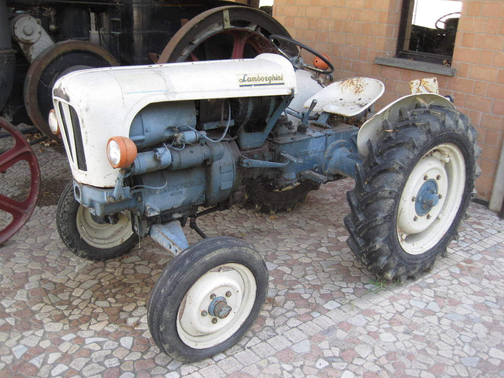
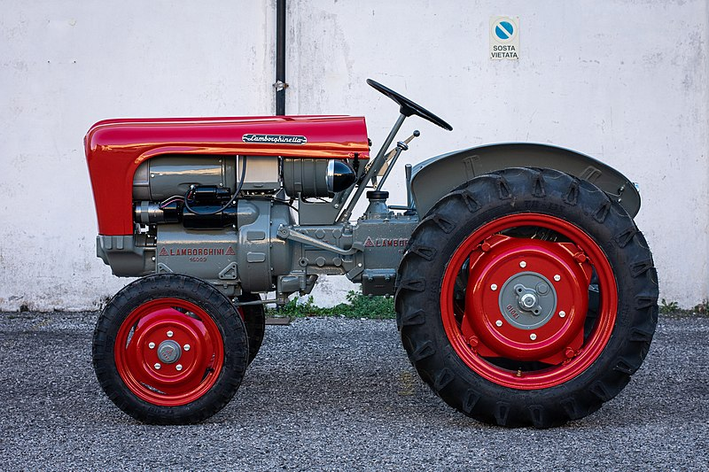

L33 Tractor Lamborghini


La société Lamborghini Trattori a été fondée en 1948, à Cento,par Ferrucio Lamborghini, qui créera également la firme Lamborghini Automobili
Ferrucio Lamborghinii,fils d'agriculteurs aisés de Renazzo de Cento dans la province de Ferrare en Italie,
à 30 km de Modène, met à profit ses connaissances en mécanique en ouvrant un petit garage dans sa ville natale,
et achète des matériels militaires réformés auprès de l'ARAR pour construire des engins agricoles.
L'entreprise équipe ainsi ses premiers tracteurs Carioca de moteurs et de transmissions de véhicules militaires,
en y ajoutant une importante innovation technique : un vaporisateur qui, appliqué au moteur Morris,
permet au tracteur de démarrer à l'essence et de fonctionner au pétrole
L'année 1951 voit la naissance du «L33»,premier tracteur entièrement Lamborghini produit en série à l'exception du moteur :
un Morris 6 cylindres en ligne de 3 500 cm3 au pétrole, avec vaporisateur à brevet Ferruccio Lamborghini. En quelques années seulement, la production passe
d'un tracteur par semaine à 200 environ par an, et de nouveaux moteurs de fabrication italienne viennent remplacer l'ancien matériel de guerre
En 1973, avec sa marque et tout son prestige, Lamborghini devient partie intégrante du groupe SAME.
10 ans plus tard, une nouvelle gamme de machines aux caractéristiques extrêmement innovantes dotées de moteurs modulaires
refroidis à l'eau fait son apparition